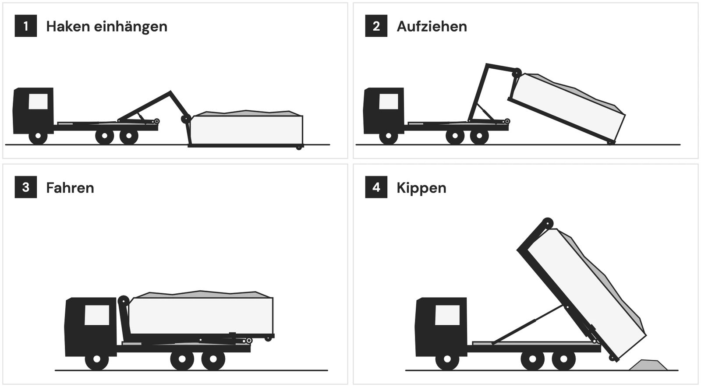

Ob Bauschutt, Grünschnitt, Altholz oder Schrott: Große Container auf Baustellen und Wertstoffhöfen holt fast immer ein Abrollkipper ab. Er zieht den Container mit einem Haken auf den LKW, fährt ihn weg und kippt ihn aus oder setzt ihn an anderer Stelle wieder ab, ganz ohne Kran.
In diesem Beitrag erklären wir mit einer Schnittgrafik, wie ein Abrollkipper aufgebaut ist und wie er arbeitet, welche Behälter dazu passen, was Typenbezeichnungen wie RS 26.70 bedeuten und worauf es beim Kauf und Verkauf eines gebrauchten Abrollkippers ankommt.
Was ist ein Abrollkipper?
Ein Abrollkipper ist ein LKW mit einem hydraulischen Hakenarm, der Abrollbehälter, auch Abrollcontainer genannt, aufnimmt und absetzt. Der Behälter hat vorn einen Bügel, in den der Haken greift, und hinten Rollen, auf denen er über den Boden rollt. Daher der Name: Der Container wird nicht gehoben, sondern auf den LKW gezogen und wieder abgerollt.
Im Handel heißt das System auch Hakenlift oder Hakengerät. Bei Feuerwehren und Kommunen spricht man vom Wechsellader, weil ein Fahrzeug viele verschiedene Behälter trägt, vom Mulden- bis zum Einsatzcontainer.
Typisch sind drei- und vierachsige Fahrgestelle mit 26 bis 32 Tonnen, oft mit einem Anhänger für einen zweiten Behälter. Es gibt aber auch leichtere Abrollkipper auf zweiachsigen Fahrgestellen, etwa für Bauhöfe und Gartenbaubetriebe.
Der Aufbau im Schnitt

Die Grafik zeigt einen dreiachsigen Abrollkipper mit beladenem Behälter. Die wichtigsten Teile:
- Hakenarm: der L-förmige Arm, vorn mit dem Haken. Er ist der eigentliche Lastarm.
- Knickgelenk und Knickzylinder: Um das Knickgelenk schwenkt der Hakenarm beim Aufnehmen und Absetzen nach hinten. Angetrieben wird er von den Knickzylindern.
- Kipprahmen, Kipplager und Kippzylinder: Der hintere Teil des Arms sitzt im Kipplager am Fahrzeugende. Beim Kippen drücken die Kippzylinder Kipprahmen, Hakenarm und Behälter gemeinsam nach oben.
- Hilfsrahmen: ein eigener Rahmen auf dem Fahrgestell, der die Kräfte des Aufbaus aufnimmt.
- Heckrollen: Über sie rollt der Behälter beim Aufziehen auf das Fahrzeug.
- Verriegelung: hält den Behälter während der Fahrt hinten fest, meist hydraulisch.
Der Hersteller Meiller nennt für einen 26-Tonnen-Abrollkipper Kippwinkel von 45 bis 58 Grad, je nach Länge des Aufbaus, und rund 16 bis 25 Sekunden zum Absetzen eines Behälters (Meiller).
So funktioniert ein Abrollkipper

- Haken einhängen: Der Fahrer stellt den LKW gerade vor den Behälter. Die Knickzylinder schwenken den Hakenarm nach hinten über das Fahrzeugende, bis der Haken in den Bügel greift.
- Aufziehen: Der Arm schwenkt zurück nach vorn. Die Vorderseite des Behälters hebt sich, hinten rollen die Behälterrollen über den Boden auf den LKW zu. Dann gleitet der Behälter über die Heckrollen auf den Hilfsrahmen.
- Fahren: Der Behälter liegt vollständig auf, die Verriegelung schließt. Eine Fahrt mit nicht vollständig verriegeltem Behälter ist nicht zulässig (BG Verkehr).
- Kippen: Zum Entleeren bleibt das Knickgelenk gesperrt. Die Kippzylinder heben den ganzen Arm samt Behälter um das Kipplager an, die Ladung rutscht hinten durch die geöffnete Klappe heraus.
Zum Absetzen läuft das Ganze rückwärts: Der Behälter rollt hinten ab, bis er mit seinen Rollen auf dem Boden steht, dann senkt der Arm die Vorderseite ab und der Haken löst sich.
Abrollbehälter nach DIN 30722
Damit jeder Abrollkipper jeden passenden Behälter aufnehmen kann, sind die Maße genormt. Die DIN 30722 regelt Abrollkipper und Abrollbehälter, Teil 1 für Fahrzeuge bis 26 Tonnen, Teil 2 für Fahrzeuge bis 32 Tonnen mit einem Anhang bis 40 Tonnen (DIN Media).
Die wichtigste Zahl ist die Bügelhöhe von 1.570 mm, gemessen von der Unterkante des Behälters bis zur Mitte des Bügels. Man spricht deshalb auch vom „System 1570“. Daneben gibt es Fahrzeuge für niedrigere Bügelhöhen, etwa für kleinere Behälter. Passt die Hakenhöhe nicht zum Behälter, lässt er sich nicht sicher aufnehmen.
Weitere Grenzen setzt die StVZO: Behälter dürfen höchstens 2,55 m breit sein, und das Fahrzeug darf mit Behälter nicht höher als 4 m sein.
Typische Abrollbehälter sind:
- offene Mulden für Bauschutt, Erdaushub und Schrott
- Behälter mit Deckel oder Plane für Papier, Holz und Gewerbeabfall
- Pressbehälter, in die direkt vor Ort Abfall gepresst wird
- Flachplattformen für Maschinen, Paletten und Baumaterial
- Wechselsilos und Spezialbehälter, zum Beispiel für die Feuerwehr
Was bedeuten Zahlen wie RS 26.70?
Viele Abrollkipper tragen eine Typbezeichnung mit zwei Zahlen. Bei Meiller steht die erste Zahl für die Nutzlast einschließlich Behälter in Tonnen, die zweite für die größte Behälterlänge in Dezimetern. Ein RS 26.70 nimmt also bis zu 26 Tonnen auf und transportiert Behälter bis 7,0 m Länge, ein RS 26.55 nur bis 5,5 m (Meiller). Andere Hersteller wie Palfinger, Hiab mit Multilift oder Hyva verwenden eigene Bezeichnungen. Im Zweifel hilft das Typenschild am Hakengerät oder das Datenblatt des Herstellers.
Wichtig für die Praxis: Wie viel ein Abrollkipper tatsächlich laden darf, hängt nicht nur vom Aufbau ab, sondern vom zulässigen Gesamtgewicht des Fahrgestells und dem Eigengewicht von LKW, Aufbau und Behälter.
Abrollkipper mit Anhänger
Im Containerdienst fahren Abrollkipper oft als Zug mit Abrollanhänger. Der Anhänger hat Rollbahnen oder einen Schlitten, über die der Fahrer den zweiten Behälter mit dem Hakenarm vom LKW auf den Anhänger schiebt oder zurückholt. So bringt ein Fahrzeug zwei Container auf einmal.
Das Überladen verlangt Erfahrung. Die BG Verkehr rät unter anderem, Zugfahrzeug und Anhänger genau in eine Flucht zu stellen, den Anhänger gegen Wegrollen zu sichern und darauf zu achten, dass die Behälterrollen frei in den Rollbahnen laufen (BG Verkehr).
Worauf beim Kauf eines gebrauchten Abrollkippers achten?
Bei einem Abrollkipper prüft man immer zwei Dinge: das Fahrgestell und den Aufbau. Für den Aufbau sind das vor allem:
- Hersteller, Typ und Baujahr des Aufbaus. Sie stehen auf dem Typenschild am Hakengerät und weichen oft vom Baujahr des LKW ab.
- Hakenhöhe und Behälterlänge. Passt der Abrollkipper zu den eigenen Behältern?
- Hydraulik. Undichte Zylinder, poröse Schläuche und Ölverlust sind teure Baustellen.
- Spiel in Lagern und Gelenken. Knickgelenk, Kipplager und Heckrollen verschleißen mit jeder Behälterbewegung.
- Verriegelung und Bedienung. Alle Funktionen sollten bei einer Vorführung mit beladenem Behälter sauber laufen.
- Prüfnachweise. Fahrzeuge mit Hakengerät müssen regelmäßig von einem Sachkundigen geprüft werden. Ein lückenloses Prüfbuch zeigt, dass der Aufbau gepflegt wurde.
Zum Fahrgestell zählen wie bei jedem LKW Laufleistung, Schadstoffklasse, Achsen und der Zustand von Rahmen und Antrieb. Wie die Euro-Norm den Wert beeinflusst, erklären wir unter Euro 3 bis Euro 6.
Was ist ein gebrauchter Abrollkipper heute wert?
Oft weniger, als Verkäufer erwarten. Diese Punkte drücken den Preis:
- Der Aufbau altert mit. Ein Hakengerät, das jahrelang täglich Container bewegt hat, ist verschlissen, auch wenn das Fahrgestell noch gut läuft.
- Der Einsatz ist hart. Containerdienst bedeutet Kurzstrecke, Baustellen und viele Hübe. Spuren davon findet jeder Käufer.
- Nicht jeder Aufbau passt. Hakenhöhe, Behälterlänge und Anhängerkupplung müssen zu den Behältern und Anhängern des Käufers passen. Was nicht passt, fällt raus.
- Maut und Umweltzonen. Ältere Abrollkipper mit niedriger Euro-Norm fahren teurer und dürfen nicht überall hinein.
- Inseratspreise sind keine Verkaufspreise. Was in Online-Börsen steht, ist der Wunsch des Verkäufers, nicht der erzielte Preis.
Ein Verkauf lohnt sich trotzdem fast immer. Ein Abrollkipper, der nur noch auf dem Hof steht, kostet Steuer, Versicherung und Prüfungen und verliert weiter an Wert.

Den Unterschied zum Absetzkipper mit Ketten und Schwenkarmen erklären wir in unserem Beitrag Absetzkipper: Aufbau und Funktion. Einen Überblick über alle Kipper-Arten gibt Kipper-LKW: Arten und Aufbauten.
Wir kaufen Abrollkipper an
Die ECS Exclusive Commerce Services GmbH aus Gehrden bei Hannover kauft gebrauchte Abrollkipper aller Marken an, mit oder ohne Behälter und Anhänger, einzeln oder als ganzen Fuhrpark. Weitere Fahrzeuge, die wir ankaufen, finden Sie unter Bau- und Kommunalfahrzeuge verkaufen und LKW verkaufen. Weil wir Nutzfahrzeuge auch exportieren, finden wir oft auch für ältere Baujahre einen Abnehmer.
So läuft es ab:
- Sie rufen uns an, schreiben uns per WhatsApp oder senden uns eine E-Mail.
- Sie nennen uns Fahrgestell, Erstzulassung, Kilometerstand sowie Hersteller und Typ des Hakengeräts und schicken ein paar Fotos, gern auch vom Typenschild des Aufbaus.
- Wir machen Ihnen ein konkretes Angebot.
- Nach Ihrer Zusage erstellen wir den Kaufvertrag und schließen das Geschäft ab.
- Wir holen das Fahrzeug ab, deutschlandweit.
Mehr zum Ablauf lesen Sie unter Unsere Arbeit. Sie möchten Ihren Abrollkipper verkaufen? Schreiben Sie uns oder rufen Sie an.
Hinweis: Dieser Beitrag dient der allgemeinen Information und ersetzt keine Rechts- oder Steuerberatung. Alle Angaben ohne Gewähr, Stand: 22. November 2026. Genannte Marken und Modellbezeichnungen gehören ihren jeweiligen Inhabern. Die ECS GmbH ist ein unabhängiger Händler und steht in keiner Verbindung zu den Herstellern.